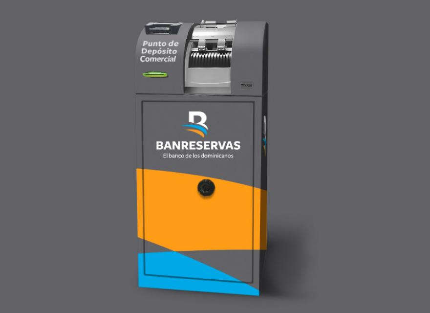

Nómina Electrónica
Es un servicio orientado a las empresas para automatizar el pago de la nómina a sus empleados, mediante una transferencia electrónica de fondos, desde la cuenta nómina de la empresa hacia cada una de las cuentas de sus empleados..
Factoring Gubernamental Reservas
Factoring Gubernamental Reservas es un programa amparado en un fideicomiso administrado por Fiduciaria Reservas, que consiste en la compra de facturas emitidas por suplidores del Estado dominicano a diversos ministerios y entidades gubernamentales por la venta de bienes y servicios
Puntos de Depósitos Comerciales
Los Puntos de Depósitos Comerciales son espacios ubicados dentro de oficinas Banreservas seleccionadas, donde los clientes comerciales previamente afiliados, podrán autoservirse para realizar depósitos de grandes cantidades de efectivo de manera referenciada mediante el uso de Receptores Inteligentes de Efectivo.